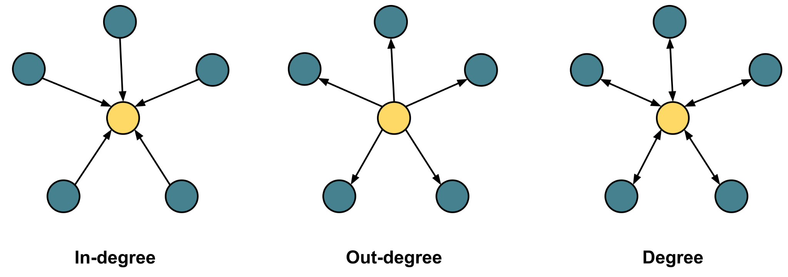
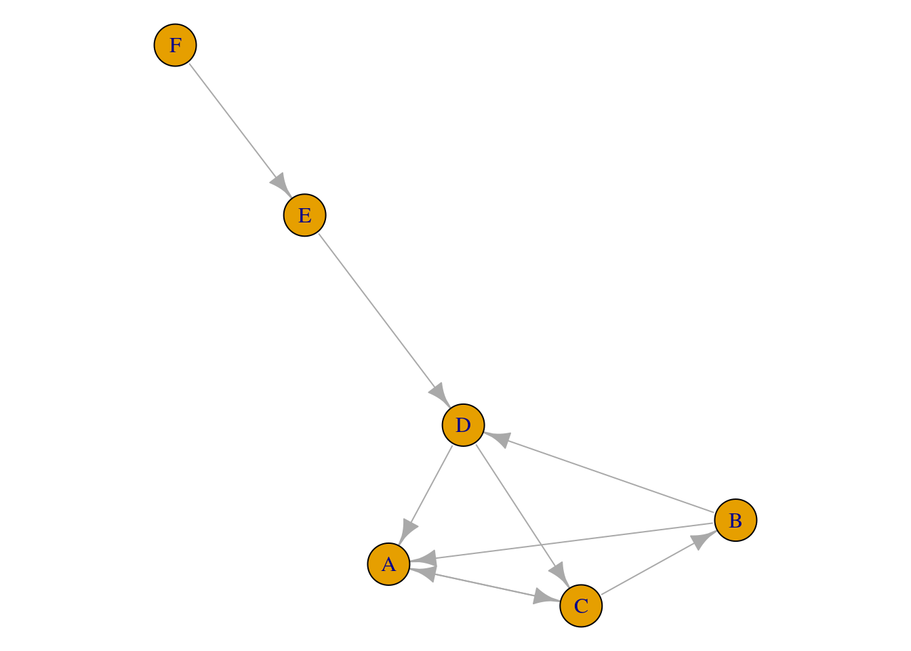
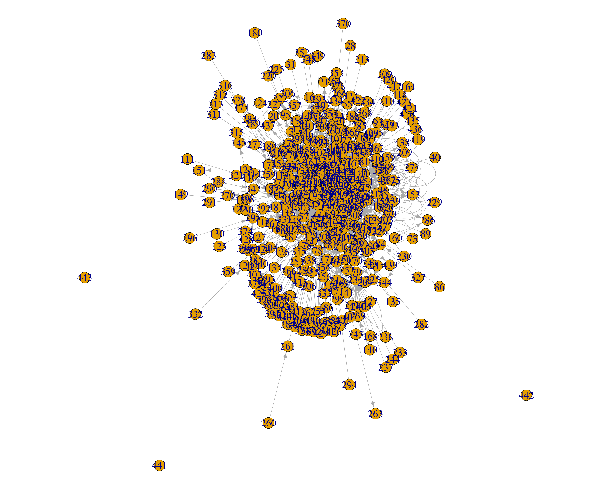

library(igraph)
library(rio)15 Social Network Analysis: A primer, a guide and a tutorial in R
Abstract
This chapter introduces the concept and methods of social network analysis (SNA) with a detailed guide to analysis with real world data using the R programming language. The chapter first introduces the basic concepts and types of networks. Then the chapter goes through a detailed step by step analysis of networks, computation of graph level measures as well as centralities with a concise interpretation in a collaborative environment. The chapter concludes with a discussion of network analysis, next steps as well as a list of further readings.
1 Introduction
Social Network Analysis (SNA) has emerged as a computational method for studying interactions, relationships, and connections among a vast array of different entities that include humans, animals, and cities, just to name a few. Two related and largely overlapping fields are also concerned with the network as a concept: network science and network analysis. Network science is concerned with the study of the structure of networks, finding patterns and universal laws that may explain or underpin such structure in a large variety of phenomena. Network analysis is a very closely related field that is concerned with the analysis of networks that are not necessarily “social”. In this chapter, we will simply use the terms social network analysis and network analysis interchangeably.
1.1 What are networks?
A quintessential concept in most analytical methods is that observations are —or should be — independent from each other whereas, in network analysis, observations can be related and interdependent and may interact with or influence each other Saqr_Poquet_Lopez-Pernas_2022. As such, network analysis offers a more realistic view of the interconnected world around us and allows us to paint an accurate picture of the relationships and interactions that underpin our world [1, 2]. For instance, when we study students’ engagement at a school, we may use a survey to measure each individual student’s engagement and compute statistics such as the correlation between engagement and grades. In doing so, we ignore that students interact with peers, teachers, and the environment around them [3, 4]. We also ignore that students get influenced by an engaged student, get supported by their friends, or face a problematic social environment that may hinder their engagement [5, 6]. Network analysis offers a rich set of methods for modeling and addressing such issues [7].
A network is simply a group of entities (often called vertices, nodes, or actors) connected through a relationship (often called edges, links, or arcs) [2]. In this chapter, we will use the terms vertices and edges for simplicity. Vertices can be humans (students, teachers, or families), ideas, keywords, behaviors, emotions, feelings, concepts, schools, countries, or any entity that can be hypothesized to have a relationship with other entities. Vertices may be connected through a vast array of relations. For instance, students may be connected to each other by being friends, teammates, classmates, group members, neighbors, sporting club fans, competitors, sharing a desk, or working together on an assignment. There is virtually no limit to how a researcher can hypothesize a network. Nevertheless, the interpretation of network analysis relies heavily on how the network was constructed [2, 8].
In learning contexts, the most common type of networks comes from digital data, and in particular online communications, the most common of which are discussion forums, where the conversation occurs between forum participants (vertices). Each reply from one participant to another forms a relationship between the two vertices, creating an edge in the network. In such a situation, we are talking about a directed network, where the interaction has a source (the person who replies) and a target (the replied-to) [9]. Other examples of directed networks are citation networks (where documents cite other documents), or users that follow other users in social media [10]. In turn, an undirected network contains non-directional relationships such as a network of siblings, friends, teammates, husband and wife, or co-workers [2.] Representing interactions as a network equips the researchers with a rich toolset to harness the power of social network analysis methods. Please note that the researcher can choose to model a directed network as undirected in case direction is deemed inappropriate according to theory, connect or research question.
2 Analysis of social networks
Two types of analysis methods are commonly used: network visualization and mathematical network analysis [2.] Visualization summarizes all the interactions in the network, giving the researcher a bird’s eye view of the structure of relationships, who is interacting with whom, who is leading the conversation, and who is isolated. Visualization is so powerful that it can summarize a whole semester of interactions in one visualization and still give meaningful information that can be used for intervention e.g., [11]. Mathematical network analysis offers quantification of all the network properties and the individual actors. The network properties are commonly known as graph-level measures. The mathematical measures of individual nodes are known node-level measures (often referred to as centrality measures) [2, 8, 12] Visualization is not discussed in details in this chapter, but interested readers are encouraged to see the excellent visualization tutorial maintained by Kateto Ognyanova [13].
2.1 Mathematical analysis
Three types of mathematical analysis can be obtained with SNA: graph-level measures, node-level measures (centrality measures) and edge-level measures. Graph level measures describe the network as a whole in terms of size, interactivity and components. Centrality measures quantify the connectivity and importance of individual actors such as the degree of involvement in interactions, the distance to others, or the importance of position among other interacting actors [12, 14, 15]. However, each of these “importance” examples can be measured in different ways. For example, students can be considered central if they frequently contribute to discussions, reply to multiple unique threads of discussions, their contributions receive multiple replies, or their contributions trigger several threads of discussions. As such, there are several centralities with diverse methods that allow us to quantify the degree of connectedness. The website centiserver.org counts more than 400 centrality measures to this date and counting. In this book chapter, we will review and learn the most commonly used centralities in education. We rely on the recent meta-analysis 2022 for listing the used centrality measures, their classification, and operationalization in the literature. Edge measures describe the edge strength, edge weights or edges or edge centralities.
2.1.1 Graph-level measures
Graph-level measures are a type of analysis used in social network analysis that describes the overall structure and characteristics of a network. They can be used to compare different networks or track changes in a network over time.
Size or vertex count is the number of vertices (individuals or groups) in the network.
Edge count is the number of edges (interactions) between vertices in the network.
Density represents the number of edges that are present in the network divided by the number of all possible connections. High density indicates that many vertices in the network are connected to one another.
Reciprocity is another important graph-level measure that also reflects group cohesion. A reciprocated edge is an edge where two vertices have a reciprocal relationship (e.g., they are simultaneously source and target) [16]. The higher the ratio of the reciprocated edges, the more collaborative the network is, less centralized (dominated by few) and more participatory.
Transitivity (or global clustering coefficient) measures the tendency of the vertices to cluster together or form tightly knit cliques. There is a large volume of research that associates the ratio of cliques with cohesion in collaborative groups, strong ties and productive knowledge construction [16]
Other graph-level measures are aggregations of vertex-level or edge-level measures. For example, the mean degree is the mean number of edges of all the vertices in the network. In a collaborative group, the higher the mean degree, the more interactive the group is.
2.1.2 Local centrality measures
Local centrality measures are centralities that map the direct or immediate connections of an actor. Put another way, the local centralities quantify the neighbors of a certain vertex where each of these neighbors is directly connected to the target vertex without any intermediates (Figure 15.1).
In-degree centrality represents the total number of incoming interactions or relationships of a vertex [12, 14]. Several examples exist in the literature with different operationalization and interpretations. In the case of collaborative learning, in-degree centrality has been interpreted as the worthiness of a participant’s contributions to receive replies, popularity, or influence [17–19].
Out-degree centrality represents the total number of outgoing interactions or links from an actor to other actors in the network [12, 14, 20]. Out-degree has been commonly interpreted as an indicator of participation, effort, and activity [21, 22].
Degree centrality refers to the total number of connections or interactions (incoming or outgoing) a vertex has. In undirected networks, it is simply the number of all connections of the vertex. Degree centrality can be interpreted in a similar way to the previous similar centralities as an indication of interactivity, communication, and social role in the collaborative process [23–25].

2.1.3 Measures based on shortest paths
Other relevant measures in assessing social network graphs are the shortest paths. These are based on the shortest distance between a pair of points (vertex) in the graph and represent how easy it is for a vertex to access others’ resources [12, 14, 26]. Shortest paths can be used to better measure and understand centrality, as it is based on the distribution and distance of different points in a network which can help understand other educational insights [8., 27] The most relevant measures in this sense are represented in Figure 15.2 and described below.
Closeness centrality is a measure based on the farness between the vertices of a network; more specifically between a specific vertex and the rest of the network [12, 14]. Small closeness values indicate greater proximity to other vertices, whereas larger values indicate greater distances from other vertices. In the field of education, it can be seen as a way to measure: 1) closure in interaction [11, 28–32], 2) ease of interaction [11, 24, 29, 33, 34], 3) time for accessing information [23, 31, 35], 4) dependencies [30], 5) control over resources [25, 28, 33], and 6) awareness of opportunities [28].
Betweenness centrality is a measure to show the frequency of a vertex lying on the shortest path between two other vertices. In the field of education, it indicates how actors mediate communication among themselves [8, 27]. It can be a way to understand who are the leaders of the interactions, that is, those who can moderate interactions, reach unconnected groups (inter-group connection) , influence the information flow (information brokering) and manage that information to solve problems effectively [28, 29, 36].
Eccentricity can help to see the vertices not involved in the interactions. It is calculated as the distance to the farthest other vertices in the network. It can be used in the educational field to understand which are the students at risk of dropout or those that are not participating in the activities [11, 34, 36].

2.1.4 Eigenvector-Based centralities
Other useful metrics in social network graphs are those based on eigenvector centralities, i.e., those related to the value of a connection between vertices. It is based on the idea that it is preferable to have fewer connections to strong well-connected vertices than to have many connections to weak isolated vertices. There are several measures based on this principle:
Eigenvector centrality assesses the importance of a vertex based on the centralities of the vertex to which it is connected, that is, how many connections it has to influential vertices. It has been used to understand social capital, ego, and connection strength [21, 23, 34, 37].
Pagerank is based on link analysis and allows for defining the popularity of an individual in a network. It can be used in education to understand the reputation or influence upon a group of stakeholders based on his/her contacts [36, 38].
Hub centrality is based on Kleinberg’s HITS algorithm [39] that measures who interacts more with the most influential vertices in a network. In the educational field, it could help to understand the type of students’ interaction [23, 38, 40].
Authority is also based on Kleinberg’s HITS algorithm but it is used to identify which vertices might be considered an authority on a specific topic score. It is calculated taking into account if its incoming links connect the vertex to others that have an important number of outgoing links [23, 38].
2.1.5 Other measures
There are other possible metrics to be applied in social network graphs:
Clustering coefficient is a measure of how individuals, represented as vertices, are embedded in their neighborhood [36], with interactions with other individuals forming triangles. In the educational field, it shows how an individual works with peers in groups or clusters, which shows network cohesion [11, 25, 34, 38].
Diffusion Centrality belongs to the diffusion measures that explore the structural properties that facilitate the diffusion and uptake process; that is, the diffusion resulting from the interaction. It tries to measure how well a vertex can diffuse a property given the semantics and structure of a social network and a model of diffusion [41, 42]. In education, it can be used to show the possibility of an interaction to generate replies and these other replies [19].
Cross Clique Centrality assesses the number of cliques or triangles a vertex belongs to. It is related to the degree of embeddedness, connectivity with other vertices, and strength of ties among vertices. In education, it allows understanding, for example, whether a post is going to be replied to and spread throughout the network [19].
Coreness (k-core or linkage) is similar to h-index metrics for publications, and is based on networks where all vertices have at least a k degree [43]. It is interesting because if an individual may produce promising contributions, he or she is going to attract others with similar contributions and establish strong connections. In the field of education, those students involved in active interactions/discussions will attract other active users, which will enrich the discussion and therefore the interaction, collaboration, the quality of content, etc. [19].
2.2 Network visualization
As we discussed earlier, networks represent the relationships (edges) between actors (vertices). A vertex is commonly represented as a circle —although other shapes are also used— and the edge as an arrow (in the case of a directed network) from the source of interaction to the target of the interaction (Figure 15.3). For example, a phone call from the caller to the call receiver is represented by an arrow from the caller to the receiver. In the case of an undirected network, the edge is represented by a line connecting both vertices, for instance, two siblings, where the relationship is mutual.

2.3 Network analysis
Let us start with a simple example that uses a common analysis scenario. Our example is a fictional discussion among students where we model interactions between students as a network. Building a network from interactions in discussion forums has been commonly performed by building a post-reply network where an edge is constructed from the author (source of the reply) to the replied-to (target of the reply). For instance, in Figure 15.4, B replies to A by saying “I agree, this could slow the progression of the disease but does it prevent the spread completely or terminate the pandemic?”. This can be represented as an edge from B to A. In the same token, C replies to B which represents another edge C to B. We can compile all of these interactions in a list of edges as shown in Table 15.1 which is often referred to as an edge list. An edge list is a simple way —among many others— to represent the network and therefore we will use it in this chapter. Constructing the network can be performed by aggregating all edges as a network as Figure 15.4.

| Source | Target |
|---|---|
| B | A |
| C | B |
| D | C |
| E | D |
| F | E |
| B | D |
| C | A |
| A | C |
| D | A |
There are other ways to construct the network that depend on the researcher’s conceptualization, context, and research question. For instance, researchers may consider all students present in a discussion (co-present) and therefore linked together, which means that all vertices will have connections to each other [9, 22, 44]. Similarly, several ways exist to aggregate the network. Figure 5 shows three identical networks where we have duplicate ties (i.e., repeated interactions between the same pair of vertices). In Figure 15.5 A, all interactions are represented. We can see, for instance, that there are six edges between A and F vertices. We can also see that there is a “loop” or “self-loop” around C and E. A loop exists when an interaction occurs between the vertex and itself, as is the case when one replies to their own post. This type of network configuration where multiple edges and self-loops are allowed is often referred to as multigraph. Another possible way to aggregate the network is to create a weight for each edge which represents the frequency of interactions between each pair of vertices (Figure 15.5 B). For instance, the edge between A and F will have a weight of 6 which is the number of edges between A and F, whereas the weight of the edge between H and B is 1 since this interaction only happened once. The network in Figure 5B has an edge with a thickness that corresponds to the weight of 6, i.e., six times as thick as the edge between H and B. In other instances, we may disregard these repeated edges when they do not make a difference to our conceptualization of the network (Figure 15.5 C). Such a type of network is often referred to as a simplified network. For a discussion about network configurations and how they influence research results see [22].

3 Network analysis in R
The R language has a large number of libraries for the analysis of networks. The igraph package —the one used in our chapter— seems to be the preferred package by the R community given the number of dependencies, i.e., the number of other packages that rely on igraph or work with the igraph format [45–47]. The igraph package is fast, efficient, and well-respected within the academic community. The igraph package is also well maintained, continuously updated, has a large community, and has been released for other platforms besides R, e.g., Python. Other packages, such as sna and network, have a large user base, especially among those who are interested in statistical network modeling. Any of these packages —sna, network or igraph— can effectively perform the analysis described in this chapter. However, we will use igraph based on its relative ease of use and convenience for the chapter objectives.
Example 1
Let us start with a simple example where we analyze the network created for Figure 6. Before doing anything else, we need to import the necessary packages. We will use igraph to construct and represent networks, and we will use rio to download and import the data files that we need to use as an input for igraph.
We can now use the import function from rio to download the data for the example (the data shown in Table 1), and assign it to a variable named SNA_example1.
SNA_example1 <-
import("https://github.com/lamethods/data/raw/main/8_examples/SNA_example1.xlsx")The function graph_from_data_frame from igraph converts the edge list in Table 15.1 into a network. R expects a dataframe where the first two columns are used as edges (the first column is used as source column, and the second is used as source column). Please also note that the two columns can have any name. Also, all extra columns —if they are there— will be used as edge attributes. We can print it to see if it has been created correctly. The print function is commonly used to test if the graph creation has been successful. In other words, does the created network have the expected number of vertices, edges, and attributes?
Net <- graph_from_data_frame(SNA_example1)
print(Net)IGRAPH 4dcb64e DN-- 6 9 --
+ attr: name (v/c)
+ edges from 4dcb64e (vertex names):
[1] B->A C->B D->C E->D F->E B->D C->A A->C D->AThe output of the print function gives a glimpse of the network properties. First, igraph states that the object is an igraph object (a network). Then, igraph gives a unique seven-letter identifier for the network (not usually needed for analysis). Next, igraph tells us that the network was directed (D) and named (N), i.e., vertices have a name attribute. Then, igraph lists the attributes and the edges of the network. We can also visualize the created network (Figure 15.6) by using the function plot.
plot(Net)
igraphWe have seen here the most basic functions we can use in a graph with no arguments. As shown, networks work with little effort with R. In the next section, we will take a deeper look into these functions and others using another network from a published paper.
Example 2
The next example is a larger network that comes from the interactions of a group of teachers in a Massive Open Online Course (MOOC). The MOOC included 445 participants from different places in the United States. The dataset has an edges file where the first two columns are the sender (source) and receiver (target). There is also a file for the vertices that contains demographic and other relevant information about each vertex: gender, location, and their role, etc. For more information about this dataset, please refer to the data chapter [48]. To get the data into R, we first need to read the data, store it in a dataframe and then build a network with the appropriate arguments.
The first line of the code reads the edges list data with their attributes into a dataframe with the name net_edges. The second line imports the vertex data with their attributes into a dataframe with the name net_nodes.
net_edges <-
import("https://github.com/lamethods/data/raw/main/6_snaMOOC/DLT1%20Edgelist.csv")
net_nodes <-
import("https://github.com/lamethods/data/raw/main/6_snaMOOC/DLT1%20Nodes.csv")To create the network, we again use the function graph_from_data_frame. This time we have to specify the edges dataframe using the argument d=net_edges. The second argument (optional) tells igraph that the network should be directed, if not provided, the network is created directed by default. The third argument which is also optional vertices = net_nodes tells igraph to use the dataframe net_nodes for vertex attributes. If the vertices argument is not provided, igraph will extract vertex names from the edges data. In case there are important vertex attributes for the analysis, providing the vertices data can be useful. Building the network and explicitly setting all arguments —as we did— helps avoid the problems that could happen from the default settings of the function. For instance, the network could be created as directed where we aim at creating an undirected network. Note that igraph generates a multigraph network by default (see Figure 15.7).
DLT1 <- graph_from_data_frame(d=net_edges, directed = TRUE, vertices = net_nodes)Let us now explore the network and see if it was built correctly using the function print. The print function output shows that the network is an igraph object, directed and named (DN) has 445 vertices, 2529 edges and then igraph lists the attributes of the vertices and the edges. Vertex attributes are listed along with their type. For instance, name (v/c) means the name attribute is a (v)ertex attribute and a (c)haracter. Edge attributes are listed in the same way. For instance, timestamp (e/c) means that it is an (e)dge and a (c)haracter.
print(DLT1)IGRAPH 572bc57 DN-- 445 2529 --
+ attr: name (v/c), Facilitator (v/n), role1 (v/c), experience (v/n),
| experience2 (v/c), grades (v/c), location (v/c), region (v/c),
| country (v/c), group (v/c), gender (v/c), expert (v/c), connect
| (v/c), Timestamp (e/c), Discussion Title (e/c), Discussion Category
| (e/c), Parent Category (e/c), Category Text (e/c), Discussion
| Identifier (e/c), Comment ID (e/n), Discussion ID (e/n)
+ edges from 572bc57 (vertex names):
[1] 360->444 356->444 356->444 344->444 392->444 219->444 318->444 4 ->444
[9] 355->356 355->444 4 ->444 310->444 248->444 150->444 19 ->310 216->19
[17] 19 ->444 19 ->4 217->310 385->444 217->444 393->444 217->19 256->219
+ ... omitted several edgesA network can also be plotted with the function plot() (Figure 15.7). However, plotting with R is a vast field and will not be discussed in detail here.
plot(DLT1, layout = layout.fruchterman.reingold,
vertex.size = 5, vertex.label.cex = 2)
igraph3.1 Graph level analysis
Now that we have seen how to build a network from edge and vertex data, we are ready to understand some of the most commonly performed analyses in learning settings. The first type of analysis will look at the network level, or the whole group of collaborators. Analyzing the network level can tell us how interactive the group is, how cohesive, and how distributed the interactions are. We will go through each of these graph-level measures with a brief explanation of what they actually mean. We will use the data from example 1 (DLT1).
Let us first start by calculating the basic measures of the network. The number of vertices can be queried using the function vcount, which adds up to 445, and the number of edges can be queried using the function ecount, which is 2,529. We can get the average number of interactions by a participant by dividing the number edges by the number of vertices which is 5.68.
vcount(DLT1) ## 445
ecount(DLT1) ## 2529
ecount(DLT1) / vcount(DLT1) ## 5.683146The density of a graph is an important parameter of a collaborative network that refers to the ratio of existing edges to the maximum possible among all participants. Density is maximum (1) when every vertex has interacted with every other vertex in the network. Graph density can be measured using the function graph.density.
graph.density(DLT1) ## 0.01279988However, the graph.density function may result in erratic results if the network is multigraph; this is because the igraph algorithm will count the repeated edges and loops. Thus, we need to simplify the network (delete all repeated edges and loops) before computing the density and use the simplified network to compute the graph density. The results of the density of the graph of 0.0097 which is rather a low value.
graph.density(simplify(DLT1)) ## 0.009798563Reciprocity is another important graph-level measure that also reflects group cohesion. A reciprocated edge is an edge where two vertices have a reciprocal relationship (e.g., they are simultaneously source and target) [16]. The higher the ratio of the reciprocated edges, the more collaborative the network is, less centralized (dominated by few) and more participatory. Reciprocity can be computed using the function reciprocity, which automatically removes the loops (i.e., does not consider when a person replies to oneself). The reciprocity by igraph definition is the fraction of reciprocated edges in a directed graph. The value here is 0.1997544 which means that only 20% of all edges were reciprocated.
reciprocity(DLT1) ## 0.1997544We can also compute the dyad.census which returns the number of mutual interactions (reciprocated between a pair of vertices), the number of asymmetric interactions (interactions that are not reciprocated), and the number of non-connected pairs. The number of mutual interactions in our network is 212, which is relatively small given the asymmetric (1512) and non-connected pairs (97066).
dyad.census(DLT1) ## $mut [1] 212 $asym [1] 1512 $null [1] 97066Transitivity (or global clustering coefficient) measures the tendency of the vertices to cluster together or form tightly knit cliques. In igraph, transitivity is measured as the probability that the neighboring vertices of a vertex are also connected to each other or, more accurately, the ratio of triangles in the network to the total count of triplets (all occurrences of three vertices connected by two edges). There is a large volume of research that associates the ratio of cliques with cohesion in collaborative groups, strong ties and productive knowledge construction Block_2015. There are several methods for the estimation of transitivity. Here, we are going to focus on global transitivity (i.e., at the network-level) using the igraph method. The transitivity can be calculated by the function transitivity; the default function returns the global transitivity measure by default. The transitivity of our network here is 0.08880774.
transitivity(DLT1) ## 0.08880774Another possible way is to use the related function triad_census which reports the numbers of triangles and their different types. The reader may need to refer to the package manual to dig deeper in the results.
triad_census(DLT1) [1] 13901588 486626 124805 4227 35745 11186 15929 3668
[9] 932 81 1857 376 223 334 345 68Group productivity or intensity of interactivity can be explored using the degree measures and its variants. The average degree of the network measures how much on average each group member has contributed and received interactions. To compute the average degree, we first have to compute the degree for each member and then compute the mean.
In directed networks (like the one in this example), we can also compute the average in-degree and out-degree. For the same set of vertices, the network average in-degree should be equal to out-degree and both combined should be equal to the total degree. However, if we, for instance, compute a subset of vertices (only students excluding the teachers), in-degree and out-degree may be different. The code below computes the mean and median of the three measures, using the function degree with the argument mode="total" for the total degree, mode="in" for the in-degree, and mode=“out” for out-degree.
Mean_degree <- mean(degree(DLT1, mode = "total")) ## 11.36629
Mean_in_degree <- mean(degree(DLT1, mode = "in")) ## 5.683146
Mean_out_degree <- mean(degree(DLT1, mode = "out")) ## 5.683146
Median_degree <- median(degree(DLT1, mode = "total")) ## 4
Median_in_degree <- median(degree(DLT1, mode = "in")) ## 1
Median_out_degree <- median(degree(DLT1, mode = "out")) ## 2The mean degree is 11.36629 and the mean in-degree and out-degree are 5.683146. The median degree is 4, the median in-degree is 1, and the median out-degree is 2. The median differs significantly from the mean and may be more relevant here in this large network, where participation may not be well-distributed (see next section).
Collaboration is participatory by design but, oftentimes, some students may dominate and contribute disproportionately more than others. In the same vein, some may prefer to be isolated and thus rarely participate. Several measures allow us to measure the distribution of interactions across the network and how skewed the network contribution patterns are. An obvious method that comes straight from statistics is the standard deviation (SD) of the degree centrality. We can compute the SD like we calculated the mean and median in the previous step. The SD of degree centrality in our case is 34.2, SD for in-degree centrality is 26.7, and SD for out-degree centrality is 9.8. The SD is higher than the mean which suggests that calculation and inspection of the median was justified. We can also see that the SD of the in-degree centrality is much higher than the SD of the out-degree, which means that the variability in receiving replies is higher than that of contributions. This variability is rather common since students are selective about whom they respond to and choose the reply-worthy contributions.
SD_degree <- sd(degree(DLT1, mode = "total")) ## 34.20511
SD_in_degree <- sd(degree(DLT1, mode = "in")) ## 26.73596
SD_out_degree <- sd(degree(DLT1, mode = "out")) ## 9.84249SNA has dedicated indices for measuring dominance in networks, known as centralization indices. Centralization indices are 0 when every vertex contributes equally and reaches the maximum of 1 when a single vertex dominates. A centralization index exists for many centralities —e.g., degree, closeness, and betweenness. Nevertheless, most of the literature has reported degree centralization, which we will demonstrate here.
The code below computes the degree, in-degree and out-degree centralization. Please note that we use a simplified network to avoid the loops and repeated edges. The results of degree centralization confirm the previous results. The degree centralization is 0.38, out-degree centralization is 0.16, and in-degree centralization is 0.60. In our network, we see that the in-degree centralization is the highest index (0.60), which means that only a few students received replies.
Centralization_degree <- centralization.degree(simplify(DLT1),
mode = "all", loops = FALSE)$centralization ## 0.3826871
Centralization_in_degree <- centralization.degree(simplify(DLT1),
mode = "in", loops = FALSE)$centralization ## 0.6064291
Centralization_out_degree <- centralization.degree(simplify(DLT1),
mode = "out", loops = FALSE)$centralization ## 0.1572214Another way to see how the interactions are distributed is to plot the degree distribution using the hist function, as demonstrated in Figure 15.8.
par(mfrow=c(1,2))
hist(degree(DLT1, mode = "in"), breaks = 100)
hist(degree(DLT1, mode = "out"), breaks = 100)
3.2 Network connectivity
We can also examine how connected the whole group is; this can be performed using the function is.connected which returns FALSE in our case, meaning that the graph has some disconnected components or subgroups of vertices that are isolated. We can check these subgroups by the function components which tells us that there are four components:
is.connected(DLT1)[1] FALSEComponents <- components(DLT1)
print(Components)$membership
1 2 3 4 5 6 7 8 9 10 11 12 13 14 15 16 17 18 19 20
1 1 1 1 1 1 1 1 1 1 1 1 1 1 1 1 1 1 1 1
21 22 23 24 25 26 27 28 29 30 31 32 33 34 35 36 37 38 39 40
1 1 1 1 1 1 1 1 1 1 1 1 1 1 1 1 1 1 1 1
41 42 43 44 45 46 47 48 49 50 51 52 53 54 55 56 57 58 59 60
1 1 1 1 1 1 1 1 1 1 1 1 1 1 1 1 1 1 1 1
61 62 63 64 65 66 67 68 69 70 71 72 73 74 75 76 77 78 79 80
1 1 1 1 1 1 1 1 1 1 1 1 1 1 1 1 1 1 1 1
81 82 83 84 85 86 87 88 89 90 91 92 93 94 95 96 97 98 99 100
1 1 1 1 1 1 1 1 1 1 1 1 1 1 1 1 1 1 1 1
101 102 103 104 105 106 107 108 109 110 111 112 113 114 115 116 117 118 119 120
1 1 1 1 1 1 1 1 1 1 1 1 1 1 1 1 1 1 1 1
121 122 123 124 125 126 127 128 129 130 131 132 133 134 135 136 137 138 139 140
1 1 1 1 1 1 1 1 1 1 1 1 1 1 1 1 1 1 1 1
141 142 143 144 145 146 147 148 149 150 151 152 153 154 155 156 157 158 159 160
1 1 1 1 1 1 1 1 1 1 1 1 1 1 1 1 1 1 1 1
161 162 163 164 165 166 167 168 169 170 171 172 173 174 175 176 177 178 179 180
1 1 1 1 1 1 1 1 1 1 1 1 1 1 1 1 1 1 1 1
181 182 183 184 185 186 187 188 189 190 191 192 193 194 195 196 197 198 199 200
1 1 1 1 1 1 1 1 1 1 1 1 1 1 1 1 1 1 1 1
201 202 203 204 205 206 207 208 209 210 211 212 213 214 215 216 217 218 219 220
1 1 1 1 1 1 1 1 1 1 1 1 1 1 1 1 1 1 1 1
221 222 223 224 225 226 227 228 229 230 231 232 233 234 235 236 237 238 239 240
1 1 1 1 1 1 1 1 1 1 1 1 1 1 1 1 1 1 1 1
241 242 243 244 245 246 247 248 249 250 251 252 253 254 255 256 257 258 259 260
1 1 1 1 1 1 1 1 1 1 1 1 1 1 1 1 1 1 1 1
261 262 263 264 265 266 267 268 269 270 271 272 273 274 275 276 277 278 279 280
1 1 1 1 1 1 1 1 1 1 1 1 1 1 1 1 1 1 1 1
281 282 283 284 285 286 287 288 289 290 291 292 293 294 295 296 297 298 299 300
1 1 1 1 1 1 1 1 1 1 1 1 1 1 1 1 1 1 1 1
301 302 303 304 305 306 307 308 309 310 311 312 313 314 315 316 317 318 319 320
1 1 1 1 1 1 1 1 1 1 1 1 1 1 1 1 1 1 1 1
321 322 323 324 325 326 327 328 329 330 331 332 333 334 335 336 337 338 339 340
1 1 1 1 1 1 1 1 1 1 1 1 1 1 1 1 1 1 1 1
341 342 343 344 345 346 347 348 349 350 351 352 353 354 355 356 357 358 359 360
1 1 1 1 1 1 1 1 1 1 1 1 1 1 1 1 1 1 1 1
361 362 363 364 365 366 367 368 369 370 371 372 373 374 375 376 377 378 379 380
1 1 1 1 1 1 1 1 1 1 1 1 1 1 1 1 1 1 1 1
381 382 383 384 385 386 387 388 389 390 391 392 393 394 395 396 397 398 399 400
1 1 1 1 1 1 1 1 1 1 1 1 1 1 1 1 1 1 1 1
401 402 403 404 405 406 407 408 409 410 411 412 413 414 415 416 417 418 419 420
1 1 1 1 1 1 1 1 1 1 1 1 1 1 1 1 1 1 1 1
421 422 423 424 425 426 427 428 429 430 431 432 433 434 435 436 437 438 439 440
1 1 1 1 1 1 1 1 1 1 1 1 1 1 1 1 1 1 1 1
441 442 443 444 445
2 3 4 1 1
$csize
[1] 442 1 1 1
$no
[1] 4Using the function decompose, we can look at each of the components. The largest component has 442 vertices, and three others have one vertex. These isolated vertices are simply students who did not contribute at all and do not represent a real subgroup.
Decomposed <- decompose(DLT1)
Decomposed[[1]]IGRAPH e8cd1d2 DN-- 442 2529 --
+ attr: name (v/c), Facilitator (v/n), role1 (v/c), experience (v/n),
| experience2 (v/c), grades (v/c), location (v/c), region (v/c),
| country (v/c), group (v/c), gender (v/c), expert (v/c), connect
| (v/c), Timestamp (e/c), Discussion Title (e/c), Discussion Category
| (e/c), Parent Category (e/c), Category Text (e/c), Discussion
| Identifier (e/c), Comment ID (e/n), Discussion ID (e/n)
+ edges from e8cd1d2 (vertex names):
[1] 360->444 356->444 356->444 344->444 392->444 219->444 318->444 4 ->444
[9] 355->356 355->444 4 ->444 310->444 248->444 150->444 19 ->310 216->19
[17] 19 ->444 19 ->4 217->310 385->444 217->444 393->444 217->19 256->219
+ ... omitted several edgesWe can also look at the network diameter or largest number of steps between vertices to see how far distant vertices are (using the distance function). A more representative variable would be the average distance between vertices, which we can obtain from the mean_distance function. The network diameter is 8 and the mean distance is 3. Both numbers are relatively high. Global efficiency is another network-level measure that examines how effective is the network structure as a conduit for information exchange using the distances between vertices. When all vertices are close to each other, reachable with a few number of steps, the network is said to be efficient. The value of efficiency is high in well connected groups, and low otherwise. We can examine the efficiency using the function global_efficiency.
diameter(DLT1) ## 8[1] 8mean_distance(DLT1) ## 3.030694[1] 3.030694global_efficiency(DLT1) ## 0.1961034[1] 0.19610343.3 Network operations
There are many functions and tools to manipulate networks in igraph, which makes a comprehensive discussion of all of them beyond the scope of this introductory chapter. Nonetheless, we will discuss the most important functions. Oftentimes, we need to set an attribute to the vertices —e.g., setting the gender attribute for vertices— to be used in the analysis. Setting an attribute can be performed by using the V function followed by the $ character and the attribute that we want to set. Similarly, setting edge attributes can be done using the function E. In the next example, we define an attribute called weight for the vertices and we do the same for the edges. Using the skills we learnt, we can use them to create a simplified weighted network. We do so by concatenating all repeated edges into a single edge with the weight as the frequency. For that, we start by first assigning weights of 1 to each node and edge. Lastly, we use the function simplify to remove the duplicated edges and aggregate the weights (edge.attr.comb = list(weight = "sum", "ignore")) while all other edge attributes will be ignored.
V(DLT1)$weight <- 1
E(DLT1)$weight <- 1
simple.DLT1 <- simplify(DLT1, remove.multiple = TRUE, remove.loops = TRUE,
edge.attr.comb = list(weight = "sum", "ignore"))There are two important functions that we may need if we want to divide or create a subnet of the network. The function subgraph.edges allows us to create a subset of a network based on edge characteristics. In the following example, we create a subgraph with the discussions involving Curriculum & Instruction by using the argument E(DLT1)$'Discussion Category'== 'Curriculum & Instruction'. In the same way, the induced_subgraph function allows us to specify a subgraph based on the vertex characteristics. In the next example, we create a network for North Carolina teachers using V(DLT1)$location== "NC".
k <- subgraph.edges(DLT1,
eids = which(E(DLT1)$'Discussion Category' == 'Curriculum & Instruction'))
NC_network <- induced_subgraph(DLT1, vids = which(V(DLT1)$location == "NC"))3.4 Individual vertex measures (centrality measures)
We have discussed the centrality measures in the introductory section and how they can be used in an educational context. Centrality measures may serve many functions, —e.g., indicators of performance in collaborative environments [49] or indicators for roles in collaboration [21]. The igraph package allows the calculation of several centrality measures, many of which have been used in educational research and some of which may not be relevant. Other packages, such as centiserve, allow an even larger number of centrality measures [50]. In this section, we will focus on the common centrality measures according to the recent meta-analysis by [49] and other recently used measures, such as diffusion centrality measures.
Degree centrality measures can be computed using the function degree and the argument mode specifies the type of degree where mode="in" returns in-degree, mode="out" returns out-degree, mode="total" returns total degree centrality. In case of undirected networks, the mode argument is ignored and the function returns only the degree centrality, since there is no direction. We can combine all the centralities that we calculate together in a dataframe using the tibble function from the tibble package.
InDegree <- degree(DLT1, mode = "in")
OutDegree <- degree(DLT1, mode = "out")
Degree <- degree(DLT1, mode = "total")
Degree_df <- tibble::tibble(name = V(DLT1)$name, InDegree, OutDegree, Degree)
print(Degree_df)# A tibble: 445 × 4
name InDegree OutDegree Degree
<chr> <dbl> <dbl> <dbl>
1 1 20 33 53
2 2 2 5 7
3 3 2 4 6
4 4 2 14 16
5 5 16 17 33
6 6 9 24 33
7 7 32 26 58
8 8 13 18 31
9 9 2 12 14
10 10 8 12 20
# ℹ 435 more rowsNote that igraph has another function called graph.strength that computes the degree centrality and takes the edge weight attribute into account. In multigraph networks —like ours— degree centrality and graph.strength should return the same result. However, in networks where the edges have a weight attribute both functions (degree and graph.strength) return different results. In such weighted networks —like the simplified network we created in the previous example— the degree function will return the unique connections of every vertex or the size of the vertex direct collaborators —known as the size of the ego network. The graph.strength function will return the number of interactions a vertex has made. See the next example and compare the results. For more information about the different calculation methods of degree centrality of weighted networks, readers are advised to refer to the seminal article by [51].
InStrength <- graph.strength(DLT1, mode = "in")
OutStrength <- graph.strength(DLT1,mode = "out")
Strength <- graph.strength(DLT1, mode = "total")
Strength_df <- tibble::tibble(name=V(DLT1)$name,InStrength,OutStrength,Strength)
print(Strength_df)# A tibble: 445 × 4
name InStrength OutStrength Strength
<chr> <dbl> <dbl> <dbl>
1 1 20 33 53
2 2 2 5 7
3 3 2 4 6
4 4 2 14 16
5 5 16 17 33
6 6 9 24 33
7 7 32 26 58
8 8 13 18 31
9 9 2 12 14
10 10 8 12 20
# ℹ 435 more rowsCloseness and betweenness centralities are the most commonly used centrality measures according to [49] and both rely on the position of the vertex on the shortest paths between others. Closeness centrality can be calculated using the function closeness, which is directional; this means that we can compute in-closeness, out-closeness and total closeness centrality. Betweenness centrality can be computed using the function betweenness and the function is directional: the argument directed=TRUE computes the directional version, and vice versa. Another commonly used centrality measure is eigenvector centrality, which can be computed using the function eigen_centrality. The eigen_centrality function default is directed=FALSE, since it is less suited for directed networks [14]. Pagerank is another closely related centrality measure that uses a similar algorithm and is more suitable for directed networks. The Pagerank centrality can be calculated using the function pagerank. Please note that to obtain the value of the centrality, you need to use $vector at the end as demonstrated in the code.
An important question here is whether to compute these centralities with a simplified network, weighted network or a multigraph network. The answer depends on the context, the network structure and the research question. However, evidence suggests that multigraph configuration may render the most accurate results when centralities are used as indicators for performance [22]. The code below computes the aforementioned centralities, you may need to read the help of each centrality function for more options and arguments for customization:
Closeness_In <- closeness(DLT1, mode = c("in"))
Closeness_Out <- closeness(DLT1, mode = c("out"))
Closeness_total <- closeness(DLT1, mode = c("total"))
Betweenness <- betweenness(simple.DLT1, directed = FALSE)
Eigen <- eigen_centrality(simple.DLT1, directed = FALSE)$vector
Pagerank <- page.rank(DLT1, directed = FALSE)$vectorDiffusion centralities have been introduced recently in several studies and seem to offer a more robust estimation of a vertex role in spreading information [19, 52]. Diffusion centrality can be computed in the same way as degree centrality. However, there is no function in the igraph package to calculate this centrality, so we rely on the diffusion.degree function from the centiserve package. The function diffusion.degree accepts the mode argument to compute different variants, i.e., "in", "out" and "total" diffusion degrees.
library(centiserve)
Diffusion.degree_in <- diffusion.degree(DLT1, mode = c("in"))
Diffusion.degree_out <- diffusion.degree(DLT1, mode = c("out"))
Diffusion.degree <- diffusion.degree(DLT1, mode = c("all"))Coreness and cross-clique connectivity are related centralities that estimate the embeddedness of the vertex in the network can be calculated using the functions coreness and crossclique. Both coreness and crossclique centralities have been shown to better correlate with performance as well as with productive and reply-worthy content [19].
Coreness <- coreness(DLT1)
Cross_clique_connectivity <- crossclique(DLT1)Warning in cliques(graph): At core/cliques/cliquer_wrapper.c:57 : Edge
directions are ignored for clique calculations.We can also combine the rest of the centralities together in a single dataframe:
Centdf <- tibble::tibble(name=V(DLT1)$name,Closeness_total,Betweenness,
Eigen,Pagerank,Diffusion.degree,Coreness,Cross_clique_connectivity)
print(Centdf)# A tibble: 445 × 8
name Closeness_total Betweenness Eigen Pagerank Diffusion.degree Coreness
<chr> <dbl> <dbl> <dbl> <dbl> <dbl> <dbl>
1 1 0.00110 1258. 0.206 0.00840 1865 18
2 2 0.000808 26.5 0.0107 0.00140 218 6
3 3 0.000799 30.6 0.00862 0.00130 191 6
4 4 0.00102 72.5 0.0803 0.00273 965 13
5 5 0.00106 309. 0.162 0.00525 1508 18
6 6 0.00108 250. 0.155 0.00539 1607 18
7 7 0.00111 1935. 0.230 0.00931 2088 21
8 8 0.00106 164. 0.136 0.00503 1483 18
9 9 0.00104 69.5 0.119 0.00251 1216 13
10 10 0.00106 716. 0.0875 0.00343 1432 17
# ℹ 435 more rows
# ℹ 1 more variable: Cross_clique_connectivity <int>The calculation of graph level measures and centrality measures are usually a step in the analysis to answer a research question. For instance, density can tell how distributed the interactions between students are and therefore, how it is collaborative [5]. Centrality may be calculated to identify who are the most important students in the discussions or used to infer the roles e.g., who are the leaders who drive the discussion [21, 23]. Several studies have calculated centrality measures to investigate their relationship with performance [18]. All of such types of analysis can be performed using the analysis we have demonstrated. Of course, there are no limits to the potentials of SNA and researchers have a wide range of possibilities and potentials that they can achieve by building on the aforementioned tutorials.
4 Discussion
The present chapter offered a primer on social network analysis as well as a tutorial on the most common types of SNA analysis. SNA is a vast field with diverse applications that are far beyond a chapter or even a whole book. Readers who are interested in expanding their knowledge about SNA are advised to read the literature cited in this chapter. Furthermore, several systematic reviews have tried to offer a synthesis of the extant literature and can help the readers get an idea about the status of SNA research in education. Two systematic reviews, [27, 53]. – despite being relatively old– they give a useful review on the uses and applications of SNA in learning settings. For instance, the methods used by SNA researchers have been addressed in a dedicated systematic review by [8], where the authors offered a detailed review of methodological approaches used in SNA research. Centrality measures were the topic of a recent systematic review and meta-analysis that synthesized the literature and offered evidence of the association of centrality measures with academic achievement [49].
A more recent scientometric study by [6] offers a comprehensive review of all research on network analysis and network science across the past five decades. The study also offers a review of authors, countries, research themes and research foundations. Whereas not a traditional systematic review, the recent paper by [9] offers a review of the seminal papers of SNA with a methodological approach. The paper also offers recommendations for a reporting scheme for research using SNA. It is also important to mention that our chapter covered only static networks. Readers who are interested in the more advanced time varying networks, the temporal network chapter offers a great starting point [54]. Also several guides and empirical papers demonstrate examples of temporal network analysis [20, 55, 56]. Readers who want to go deeper in analysis of learning communities, the community detection chapter can be a good place [57]. Also, for readers interested in the novel methods of psychological networks, they are encouraged to read the psychological network chapter [58].
5 More reading resources
Books related to SNA that the readers can consult are:
Kolaczyk, E. D., & Csárdi, G. (2014). Statistical analysis of network data with R (Vol. 65). New York: Springer.
Luke, D. A. (2015). A user’s guide to network analysis in R (Vol. 72, No. 10.1007, pp. 978-3). New York: Springer.
Newman, Mark. Networks. Oxford university press, 2018.
Hanneman, R. A., & Riddle, M. (2005). Introduction to social network methods. (Link)
Carolan, B. V. (2013). Social network analysis and education: Theory, methods & applications. Sage Publications.
Network Science by Albert-László Barabási (Link)
6 Acknowledgements
This paper is co-funded by the Academy of Finland the project Towards precision education: Idiographic learning analytics (TOPEILA), Decision Number 350560
References
1.
Barabási A-L (2013) Network science. Philosophical transactions Series A, Mathematical, physical, and engineering sciences 371:20120375. https://doi.org/10.1098/rsta.2012.0375
2.
Borgatti SP, Mahra A, Brass DJ, Labianca G (2009) Network analysis in the social sciences. Science 323:892–895. https://doi.org/10.1126/science.1165821
3.
Saqr M, López-Pernas S (2022) How CSCL roles emerge, persist, transition, and evolve over time: A four-year longitudinal study. Computers & education 189:104581. https://doi.org/10.1016/j.compedu.2022.104581
4.
Saqr M, Nouri J, Fors U, Viberg O, Alsuhaibani M, Alharbi A, Alharbi M, Alamer A (2021) How networking and social capital influence performance: The role of long-term ties. In: Antonyuk A, Basov N (eds) Lecture notes in networks and systems. Springer International Publishing, Cham, pp 335–346
5.
Saqr M, Nouri J, Vartiainen H, Tedre M (2020) Robustness and rich clubs in collaborative learning groups: A learning analytics study using network science. Scientific reports 10:14445–14461. https://doi.org/10.1038/s41598-020-71483-z
6.
Saqr M, Poquet O, Lopez-Pernas S (2022) Networks in education: A travelogue through five decades. IEEE access: practical innovations, open solutions 1–1. https://doi.org/10.1109/access.2022.3159674
7.
Saqr M, Alamro A (2019) The role of social network analysis as a learning analytics tool in online problem based learning. BMC medical education 19:1–11. https://doi.org/10.1186/s12909-019-1599-6
8.
Dado M, Bodemer D (2017) A review of methodological applications of social network analysis in computer-supported collaborative learning. Educational Research Review 22:159–180. https://doi.org/10.1016/j.edurev.2017.08.005
9.
Poquet O, Saqr M, Chen B (2021) Recommendations for network research in learning analytics: To open a conversation. In: Proceedings of the NetSciLA21 workshop
10.
López-Pernas S, Saqr M, Apiola M (2023) Scientometrics: A concise introduction and a detailed methodology for mapping the scientific field of computing education research. In: Apiola M, López-Pernas S, Saqr M (eds) Past, present and future of computing education research : A global perspective. Springer International Publishing, Cham, pp 79–99
11.
Saqr M, Fors U, Tedre M (2018) How the study of online collaborative learning can guide teachers and predict students’ performance in a medical course. BMC medical education 18:24. https://doi.org/10.1186/s12909-018-1126-1
12.
Borgatti SP, Brass DJ (2019) Centrality: Concepts and measures. In: Social networks at work. pp 9–22
13.
Ognyanova K (2023) Static and dynamic network visualization with r. Katya Ognyanova
14.
Liao H, Mariani MS, Medo M, Zhang Y-C, Zhou M-Y (2017) Ranking in evolving complex networks. Physics reports 689:1–54. https://doi.org/10.1016/j.physrep.2017.05.001
15.
Saqr M, López-Pernas S (2022) The curious case of centrality measures: A large-scale empirical investigation. Journal of learning analytics 9:13–31. https://doi.org/10.18608/jla.2022.7415
16.
Block P (2015) Reciprocity, transitivity, and the mysterious three-cycle. Social networks 40:163–173. https://doi.org/10.1016/j.socnet.2014.10.005
17.
Jo I, Park Y, Lee H (2017) Three interaction patterns on asynchronous online discussion behaviours: A methodological comparison. Journal of Computer Assisted Learning 33:106–122. https://doi.org/10.1111/jcal.12168
18.
Romero C, López M-I, Luna J-M, Ventura S (2013) Predicting students’ final performance from participation in on-line discussion forums. Computers & education 68:458–472. https://doi.org/10.1016/j.compedu.2013.06.009
19.
Saqr M, López-Pernas S (2021) Modelling diffusion in computer-supported collaborative learning: A large scale learning analytics study. International journal of computer-supported collaborative learning 16:441–483. https://doi.org/10.1007/s11412-021-09356-4
20.
Saqr M, López-Pernas S (2022) Instant or distant: A temporal network tale of two interaction platforms and their influence on collaboration. In: Educating for a new future: Making sense of technology-enhanced learning adoption. Springer International Publishing, pp 594–600
21.
Marcos-García J-A, Martínez-Monés A, Dimitriadis Y (2015) DESPRO: A method based on roles to provide collaboration analysis support adapted to the participants in CSCL situations. Computers & education 82:335–353. https://doi.org/10.1016/j.compedu.2014.10.027
22.
Saqr M, Viberg O, Vartiainen H (2020) Capturing the participation and social dimensions of computer-supported collaborative learning through social network analysis: Which method and measures matter? International Journal of Computer-Supported Collaborative Learning 15:227–248. https://doi.org/10.1007/s11412-020-09322-6
23.
Hernández-García Á, González-González I, Jiménez-Zarco AI, Chaparro-Peláez J (2015) Applying social learning analytics to message boards in online distance learning: A case study. Computers in human behavior 47:68–80. https://doi.org/10.1016/j.chb.2014.10.038
24.
Joksimovic S, Manataki A, Gaševic D, Dawson S, Kovanovic V, De Kereki IF (2016) Translating network position into performance: Importance of centrality in different network configurations. ACM International Conference Proceeding Series 25-29-Apri:314–323. https://doi.org/10.1145/2883851.2883928
25.
Reychav I, Raban DR, McHaney R (2018) Centrality measures and academic achievement in computerized classroom social networks: An empirical investigation. ACM Journal on Educational Resources in Computing 56:589–618. https://doi.org/10.1177/0735633117715749
26.
Freeman LC (1978) Centrality in social networks conceptual clarification. Social networks 1:215–239. https://doi.org/10.1016/0378-8733(78)90021-7
27.
Cela KL, Sicilia MÁ, Sánchez S (2015) Social network analysis in e-learning environments: A preliminary systematic review. Educational psychology review 27:219–246. https://doi.org/10.1007/s10648-014-9276-0
28.
Cadima R, Ojeda J, Monguet JM (2012) Social networks and performance in distributed learning communities. Educational Technology & Society 15:296–304
29.
Cho H, Gay G, Davidson B, Ingraffea A (2007) Social networks, communication styles, and learning performance in a CSCL community. Computers and Education 49:309–329. https://doi.org/10.1016/j.compedu.2005.07.003
30.
Liu Z, Kang L, Domanska M, Liu S, Sun J, Fang C (2018) Social network characteristics of learners in a course forum and their relationship to learning outcomes. In: CSEDU 2018 - proceedings of the 10th international conference on computer supported education. SciTePress, [National Engineering Research Center for E-Learning, Central China Normal University, Luoyu Road 152, Wuhan, 430079, China, Department of Computer Science, Humboldt University of Berlin, Rudower Chaussee 25, Berlin, 12489, Germany], pp 15–21
31.
Osatuyi BJ, Passerini K (2016) Twittermania: Understanding how social media technologies impact engagement and academic performance of a new generation of learners. Commun Assoc Info Syst 39:509–528
32.
Putnik G, Costa E, Alves C, Castro H, Varela L, Shah V (2016) Analysing the correlation between social network analysis measures and performance of students in social network-based engineering education. International Journal of Technology and Design Education 26:413–437. https://doi.org/10.1007/s10798-015-9318-z
33.
Gašević D, Joksimović S, Eagan BR, Shaffer DW (2019) SENS: Network analytics to combine social and cognitive perspectives of collaborative learning. Computers in human behavior 92:562–577. https://doi.org/10.1016/j.chb.2018.07.003
34.
Saqr M, Fors U, Nouri J (2018) Using social network analysis to understand online problem-based learning and predict performance. PloS one 13:e0203590. https://doi.org/10.1371/journal.pone.0203590
35.
Liu S, Chai H, Liu Z, Pinkwart N, Han X, Hu T (2019) Effects of proactive personality and social centrality on learning performance in SPOCs. CSEDU 2019 - Proceedings of the 11th International Conference on Computer Supported Education 2:481–487. https://doi.org/10.5220/0007756604810487
36.
De-Marcos L, Garciá-López E, Garciá-Cabot A, Medina-Merodio J-AJA, Domínguez A, Martínez-Herraíz JJJ-J, Diez-Folledo T (2016) Social network analysis of a gamified e-learning course: Small-world phenomenon and network metrics as predictors of academic performance. Computers in human behavior 60:312–321. https://doi.org/10.1016/j.chb.2016.02.052
37.
Wise AF, Cui Y (2018) Unpacking the relationship between discussion forum participation and learning in MOOCs: Content is key. In: ACM international conference proceeding series. Association for Computing Machinery, Learning Analytics Research Network, New York University, 239 Greene Street, 2nd Floor, New York, NY 10003, United States, pp 330–339
38.
Liu Z, Kang L, Su Z, Liu S, Sun J (2018) Investigate the relationship between learners’ social characteristics and academic achievements. In: Journal of physics: Conference series. Institute of Physics Publishing, ["National Engineering Research Center for E-Learning, Central China Normal University, Wuhan, China", “National Engineering Laboratory for Technology of Big Data Applications in Education, Central China Normal University, Wuhan, China”]
39.
Kleinberg JM (1999) Authoritative sources in a hyperlinked environment. Journal of the ACM 46:604–632. https://doi.org/10.1145/324133.324140
40.
García-Saiz D, Palazuelos C, Zorrilla M (2014) Data mining and social network analysis in the educational field: An application for non-expert users. Stud Comput Intell 524:411–439
41.
Banerjee A, Chandrasekhar AG, Duflo E, Jackson MO (2013) The diffusion of microfinance. Science 341:1236498. https://doi.org/10.1126/science.1236498
42.
Kang C, Molinaro C, Kraus S, Shavitt Y, Subrahmanian VS (2012) Diffusion centrality in social networks. In: 2012 IEEE/ACM international conference on advances in social networks analysis and mining. pp 558–564
43.
Kitsak M, Gallos LK, Havlin S, Liljeros F, Muchnik L, Stanley HE, Makse HA (2010) Identification of influential spreaders in complex networks. Nature physics 6:888–893. https://doi.org/10.1038/nphys1746
44.
Fincham E, Gašević D, Pardo A (2018) From social ties to network processes: Do tie definitions matter? Journal of Learning Analytics 5:9–28. https://doi.org/10.18608/jla.2018.52.2
45.
Csárdi G, Nepusz T, Airoldi EM (2016) Statistical network analysis with igraph
46.
Csardi G, Nepusz T, Others (2006) The igraph software package for complex network research. InterJournal, complex systems 1695:1–9
47.
Kolaczyk ED, Csárdi G (2020) Statistical analysis of network data with r. Springer International Publishing
48.
López-Pernas S, Saqr M, Del Rio L (2024) A broad collection of datasets for educational research training and application. In: Saqr M, López-Pernas S (eds) Learning analytics methods and tutorials: A practical guide using r. Springer, pp in–press
49.
Saqr M, Elmoazen R, Tedre M, López-Pernas S, Hirsto L (2022) How well centrality measures capture student achievement in computer-supported collaborative learning? – a systematic review and meta-analysis. Educational Research Review 35:100437. https://doi.org/10.1016/j.edurev.2022.100437
50.
Jalili M, Salehzadeh-Yazdi A, Asgari Y, Arab SS, Yaghmaie M, Ghavamzadeh A, Alimoghaddam K (2015) CentiServer: A comprehensive resource, web-based application and r package for centrality analysis. PloS one 10:e0143111–e0143111. https://doi.org/10.1371/journal.pone.0143111
51.
Opsahl T, Agneessens F, Skvoretz J (2010) Node centrality in weighted networks: Generalizing degree and shortest paths. Social networks 32:245–251. https://doi.org/10.1016/j.socnet.2010.03.006
52.
Saqr M, Viberg O (2020) Using diffusion network analytics to examine and support knowledge construction in CSCL settings. In: Alario-Hoyos C, Rodríguez-Triana MJ, Scheffe lM, Arnedillo-Sánchez I, S.m. D (eds) Addressing global challenges and quality education. EC-TEL 2020. Lecture notes in computer science. Springer, C, pp 158–172
53.
Sie RLL, Ullmann DT, Rajagopal K, Cela K, B. MB-R, Sloep PB (2012) Social network analysis for technology-enhanced learning: Review and future directions. International Journal of Technology Enhanced Learning 4:172–190. https://doi.org/10.1504/IJTEL.2012.051582
54.
Saqr M (2023) Temporal network analysis: Introduction, methods and detailed tutorial with r. arXiv [cs.SI]
55.
Saqr M, López-Pernas S (2022) The why, the what and the how to model a dynamic relational learning process with temporal networks. In: Proceedings of the NetSciLA22 workshop
56.
Saqr M, Nouri J (2020) High resolution temporal network analysis to understand and improve collaborative learning. In: Proceedings of the tenth international conference on learning analytics & knowledge. ACM, New York, NY, USA, pp 314–319
57.
Hernández-García Á, Cuenca-Enrique C, Traxler A, López-Pernas S, Conde MÁ, Saqr M (2024) Community detection in r. In: Saqr M, López-Pernas S (eds) Learning analytics methods and tutorials: A practical guide using r. Springer, pp in–press
58.
Saqr M, Beck E, López-Pernas S (2024) Psychological networks. In: Saqr M, López-Pernas S (eds) Learning analytics methods and tutorials: A practical guide using r. Springer, pp in–press